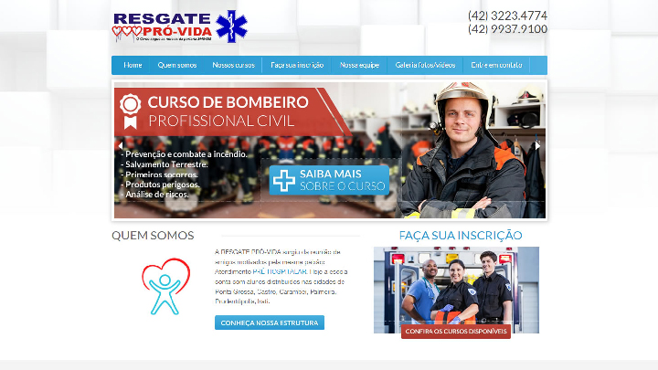
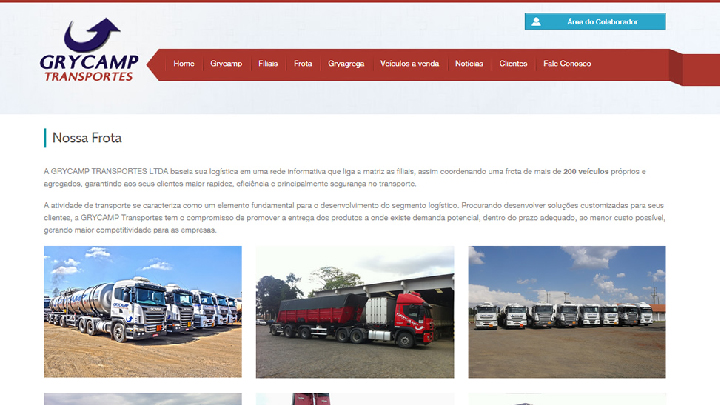
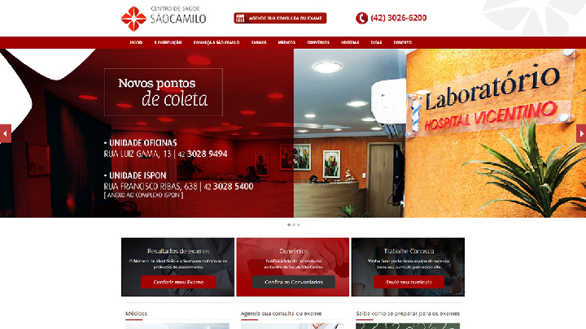
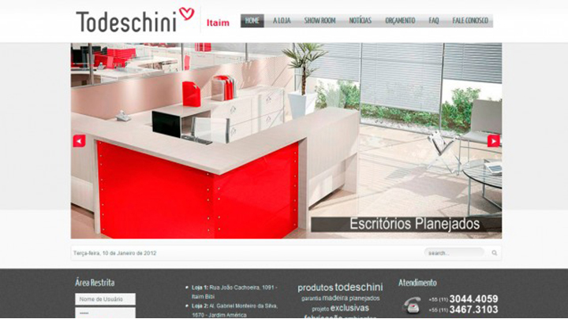
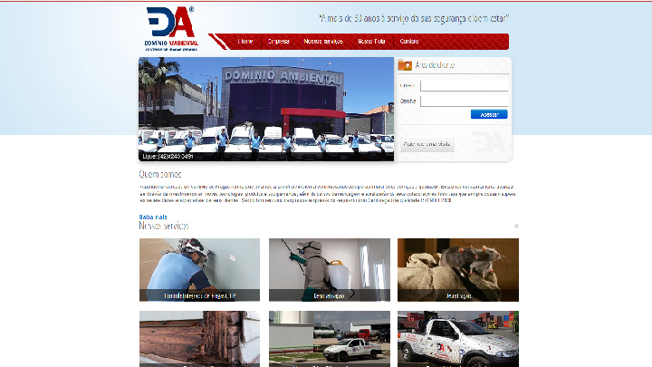
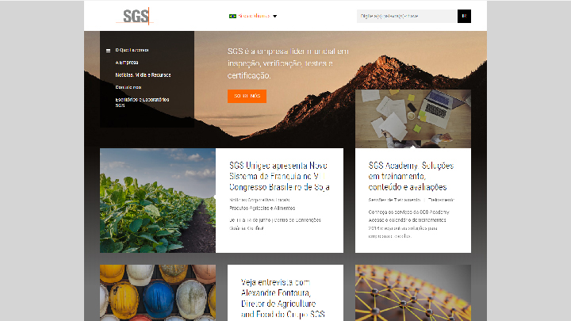

Veja quem já contratou nossos serviços
Montecito Mexican Bar e Restaurante

Site desenvolvido para o restaurante Montecito, referência quando o assunto é a culinária mexicana e tex-mex em Ponta Grossa, há mais de três anos o Montecito oferece aos seus clientes um ambiente temático descontraído e aconchegante com um vasto cardápio de pratos e bebidas.
Resgate Pró-Vida
Website desenvolvido para a empresa Resgate Pró-Vida, uma das maiores empresas de Ponta Grossa focado em cursos para socorristas, brigada de incêndio, primeiros socorros entre outros. O site foi desenvolvido com um layout Clean e responsivo, se apatpando a diferentes tipos de resoluções, desde celulares e tables até computadores.
Grycamp Transportes
Site desenvolvido para empresa Grycamp Transportes, uma das maiores transportadoras da região, focada no transporte de líquidos inflamáveis, químicos, cargas especiais indivisíveis e granéis sólidos.
Centro de Saúde São Camilo
Website desenvolvido para o Centro de Saúde São Camilo Ponta Grossa. O site foi totalmente reformulado, com um layout bonito, clean e responsivo. Conta ainda com um sistema administrativo completo, por meio do qual o próprio cliente poderá fazer o cadastro de todos os itens do site.
Todeschini
Site desenvolvido para empresa Todeschini. O site foi totalmente reformulado, com um layout bonito, clean e acessível a todos os tipos de dispositivos móveis como tablets, smartphones, etc. Tambem foi desenvolvido um sistema intranet de notícias para os colaboradores.
Verbo Livraria

Site desenvolvido para empresa Verbo Livraria. O site foi totalmente reformulado, com um layout bonito, clean e responsivo. Conta ainda com um sistema administrativo completo, por meio do qual o próprio cliente poderá fazer o cadastro de todos os itens do site.
Dominio Ambiental
Site desenvolvido para empresa Dominio Ambiental. O site foi desenvolvido com um layout Clean e responsivo, se apatpando a diferentes tipos de resoluções, desde celulares e tables até computadores.
Grupo SGS
Site desenvolvido para empresa Grupo SGS. O site foi totalmente reformulado, com um layout bonito, clean e acessível a todos os tipos de dispositivos móveis como tablets, smartphones, etc.